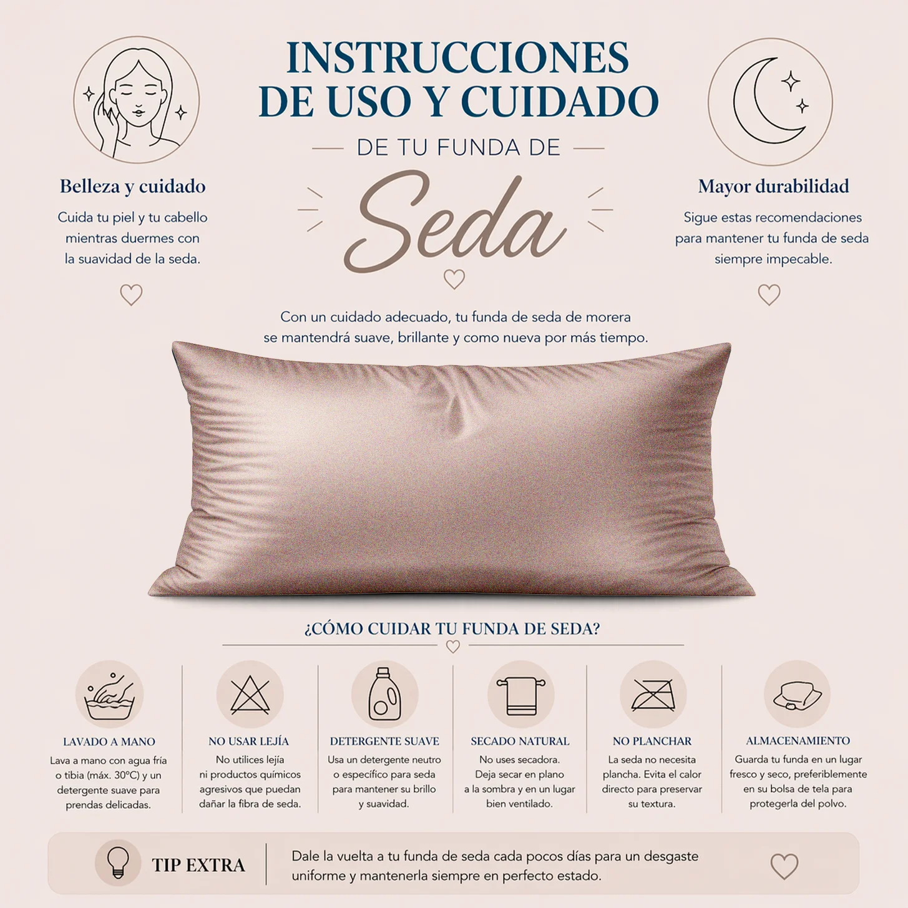

Cómo cuidar tu funda Melopido
La seda de morera necesita un cuidado delicado para conservar su suavidad, brillo y calidad con el paso del tiempo. Aquí tienes una guía clara para lavar, secar y mantener tu funda de almohada en el mejor estado posible.


Lavar a 30ºC máximo.

No usar secadora.

No usar lejía ni blanqueadores.

No retorcer la seda.

Secar en plano para mantener su forma.

Evitar la luz solar directa.

Secar al aire de forma natural.

Planchar a baja temperatura si es necesario.
Para cuidar una funda de almohada de seda de morera, lo ideal es utilizar un lavado delicado y a baja temperatura. La seda es un tejido natural muy suave, pero también más sensible que otros materiales habituales, por lo que conviene evitar programas agresivos, altas temperaturas y productos demasiado fuertes.
Un buen cuidado ayuda a mantener durante más tiempo el tacto sedoso, el brillo natural del tejido y la calidad de la prenda. Si quieres conservar tu funda Melopido en el mejor estado posible, trata siempre la seda con la misma delicadeza con la que cuida tu piel y tu cabello.
Además del lavado, el secado y el planchado también influyen mucho en la durabilidad de una funda de seda. Lo más recomendable es dejarla secar al aire, evitar la exposición directa al sol y no utilizar secadora.
Si necesitas plancharla, hazlo siempre a temperatura baja. Con estas pequeñas precauciones, tu funda de almohada conservará mejor su acabado elegante, su suavidad y su confort noche tras noche.
Si quieres descubrir más sobre el cuidado y los beneficios de la seda, puedes visitar nuestra guía principal sobre fundas de almohada de seda de morera, conocer cómo ayudan a reducir las arrugas en la piel o cómo protegen el cabello mientras duermes.
Elige la talla ideal para tu almohada y mejora tu piel mientras duermes.
6 tamaños para adaptarse a cualquier tipo de almohada